1984 and Animal Farm (41 Votes)
George Orwell, 1950, 385 pages, 4.23 by 96828 users
Following list includes top reads suggested by members of Reddit India. Here is the link to the thread, and thanks to /u/mujerdeindia
for managing and giving me the data in a nice tabular format. The code is on Github.
1984 and Animal Farm (41 Votes)
George Orwell, 1950, 385 pages, 4.23 by 96828 users
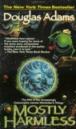
The Hitchhiker's Guide to the Galaxy (39 Votes)
Douglas N. Adams, 1992, 240 pages, 3.96 by 70433 users
India After Gandhi (25 Votes)
Ramachandra Guha, 2007, 893 pages, 4.34 by 8441 users
A Song Of Ice and Fire (16 Votes)
George R R Martin, 1996, 835 pages, 4.44 by 1194048 users
Shantaram (13 Votes)
Gregory Roberts, 2003, None pages, 4.25 by 85921 users

Brave new world (12 Votes)
Aldous Huxley, 1932, 268 pages, 3.96 by 946167 users
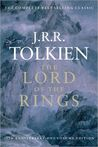
Lord Of The Rings (11 Votes)
J R R Tolkien, 1955, 1216 pages, 4.46 by 364304 users
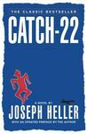
Catch 22 (11 Votes)
Joseph Heller, 1961, 453 pages, 3.97 by 523430 users
The Kite runner (10 Votes)
Khaled Hosseini, 2003, 371 pages, 4.24 by 1682681 users
The White Tiger (10 Votes)
Aravind Adiga, 2008, 320 pages, 3.70 by 107141 users
I, Asimov (9 Votes)
Isaac Asimov, 1969, 637 pages, 4.01 by 100 users
The catcher in the rye (9 Votes)
J.D Salinger, 1951, 277 pages, 3.78 by 1890519 users

Art of war (8 Votes)
Sun Tzu, 2008, None pages, 3.91 by 9 users
The discovery of India (8 Votes)
Nehru, 1946, None pages, 3.98 by 4402 users
The annihilation of caste (7 Votes)
Ambedkar, 1936, 100 pages, 4.55 by 713 users
A Suitable boy (7 Votes)
Vikram Seth, 1993, 1474 pages, 4.09 by 32306 users
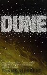
Dune (7 Votes)
Frank Herbert, 1965, 604 pages, 4.18 by 452077 users
Surely You're Joking, Mr. Feynman! (6 Votes)
Ralph Leighton, Richard Feynman, 1984, 391 pages, 4.29 by 80937 users
Ponniyin selvan (Tamil) (6 Votes)
Kalki Krishnamurthy, 1950, 1452 pages, 4.69 by 4419 users
Phantom Tollbooth (6 Votes)
Norton Juster, 1961, 256 pages, 4.22 by 167457 users
Crime and Punishment (6 Votes)
Fyodor Dostoyevsky, 1866, 545 pages, 4.17 by 350521 users
Jurassic Park (5 Votes)
Michael Crichton, 1991, 399 pages, 3.94 by 115665 users
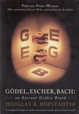
Gödel, Escher, Bach: an Eternal Golden Braid (5 Votes)
Douglas Hofstadter, 1979, 822 pages, 4.29 by 29575 users
One Hundred Years of Solitude (5 Votes)
Gabriel García Márquez, 1967, 457 pages, 4.03 by 464241 users
The Unbearable Lightness of Being (5 Votes)
Milan Kundera, 1984, 320 pages, 4.08 by 190557 users
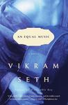
An Unequal Music (5 Votes)
Vikram Seth, 1999, 383 pages, 3.76 by 6550 users
The Handmaid's Tale (5 Votes)
Margaret Atwood, 1985, 311 pages, 4.01 by 484803 users
Complete adventures of Feluda (5 Votes)
Satyajit Ray, 2000, 788 pages, 4.49 by 2389 users
The Hunt For Red October (5 Votes)
Tom Clancy, 1992, None pages, 4.20 by 1043 users
Kane and Abel series (4 Votes)
Jeffrey Archer, 1979, 592 pages, 4.26 by 69374 users

First Among Equals (4 Votes)
Jeffrey Archer, 1983, 496 pages, 3.85 by 10325 users
Fahrenheit 451 (4 Votes)
Ray Bradbury, 1953, 227 pages, 3.96 by 471452 users
Jaya: Illustrated retelling of Mahabharata (4 Votes)
Devdutt Pattanaik, 2010, 372 pages, 4.19 by 8289 users
The design of everyday things (4 Votes)
Don Norman, 1988, 240 pages, 4.17 by 10269 users

The Picture of Dorian Gray (4 Votes)
Oscar Wilde, 1890, 254 pages, 4.05 by 538659 users
The discovery of India (4 Votes)
Nehru, 1946, None pages, 3.98 by 4402 users
Indian Philosophy (4 Votes)
Radhakrishnan, 1923, 650 pages, 4.38 by 153 users
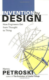
Invention by Design: How Engineers Get from Thought to Thing (4 Votes)
Henry Petroski, 1996, 256 pages, 3.77 by 190 users
The Feynman Lectures on Physics (4 Votes)
Richard Feynman, 1964, 1552 pages, 4.58 by 5258 users
Urvashi (4 Votes)
Ramdhari Singh Dinkar, 1994, 156 pages, 4.28 by 88 users
My Experiments with Truth (4 Votes)
Gandhi, 1940, 560 pages, 4.06 by 24871 users
Legion (4 Votes)
Brandon Sanderson, 2012, 88 pages, 4.12 by 18375 users
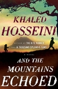
And the Mountains Echoed (4 Votes)
Khaled Hosseini, 2012, 404 pages, 4.02 by 182612 users
Norwegian Wood (4 Votes)
Haruki Murakami, 1987, 389 pages, 4.02 by 166083 users

Life of Pi (4 Votes)
Yann Martel, 2001, None pages, 3.88 by 2 users
The Great Gatsby (4 Votes)
F. Scott Fitzgerald, 1925, 180 pages, 3.88 by 2494573 users
Twenty Thousand Leagues Under the Sea (4 Votes)
Jules Verne, 1869, 394 pages, 3.85 by 111919 users
Far from the Madding Crowd (4 Votes)
Thomas Hardy, 1874, 433 pages, 3.90 by 80168 users
Great Expectations (4 Votes)
Charles Dickens, 1860, 505 pages, 3.74 by 429975 users
The Count of Monte Cristo (4 Votes)
Alexandre Dumas, 1845, 1276 pages, 4.20 by 523240 users
The Autobiography of Malcolm X (4 Votes)
Malcolm X, 1965, 466 pages, 4.28 by 107091 users

No god but God: The Origins, Evolution, and Future of Islam (4 Votes)
Reza Aslan, 2005, None pages, 4.13 by 13801 users
The Five People You Meet in Heaven (4 Votes)
Mitch Albom, None, None pages, 5.00 by 3 users
The Diary of a Young Girl (4 Votes)
Anne Frank, 1947, 283 pages, 4.09 by 1859825 users
Man's Search for Meaning (4 Votes)
Viktor Frankl, 1946, 184 pages, 4.32 by 144281 users
Siddhartha (4 Votes)
Hermann Hesse, 1922, 160 pages, 3.98 by 343799 users
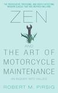
Zen and the Art of Motorcycle Maintenance (4 Votes)
Robert M. Pirsig, 1974, 540 pages, 3.75 by 129585 users
Buddha in Blue Jeans: An Extremely Short Zen Guide to Sitting Quietly and Being Buddha (4 Votes)
Tai Sheridan, 2011, 31 pages, 3.86 by 4933 users
The Prophet (4 Votes)
kahlil gibran, 1923, 127 pages, 4.22 by 132837 users
Rework: Change the Way You Work Forever (4 Votes)
David Heinemeier Hansson and Jason Fried, 2010, 279 pages, 3.92 by 77281 users
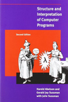
Structure and Interpretation of Computer Programs (4 Votes)
Gerald Jay Sussman, Hal Abelson, 1984, 657 pages, 4.45 by 2706 users
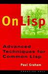
On Lisp (4 Votes)
Paul Graham, 1993, None pages, 4.31 by 356 users
Computer System Architecture (4 Votes)
M. Morris Mano, 1976, 524 pages, 3.80 by 241 users
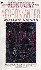
Neuromancer (4 Votes)
William Gibson, 1984, 271 pages, 3.87 by 176291 users
Slaughterhouse 5 (4 Votes)
Kurt Vonnegut, 1969, 215 pages, 4.05 by 791322 users
The Martian (4 Votes)
Andy Weir, 2011, 369 pages, 4.39 by 355343 users
Tamas (4 Votes)
Bhishma Sahani, 1972, 310 pages, 4.07 by 664 users
Rag Darbari (4 Votes)
Sri Lal Sukla, 1968, 335 pages, 4.37 by 778 users
Kasap (4 Votes)
Manohar Shyam Joshi, 2007, 312 pages, 4.41 by 33 users
Feast of the Goat (4 Votes)
Mario Vargas Llosa, 2000, 475 pages, 4.20 by 10265 users
Love in the Time of Cholera (4 Votes)
G G Marquez, 1985, 348 pages, 3.88 by 270716 users
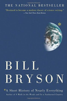
A Short History of Nearly Everything (4 Votes)
Bill Bryson, 2003, 544 pages, 4.18 by 178358 users
The communist manifesto (4 Votes)
karl marx and friedrich engels, 1848, 288 pages, 3.50 by 52249 users
Infinite Jest (4 Votes)
David Foster Wallace, 1996, 1088 pages, 4.32 by 42585 users
Cosmos (4 Votes)
Carl Sagan, 1980, None pages, 4.35 by 67873 users
The Fourth Estate (3 Votes)
Jeffrey Archer, 1996, 742 pages, 3.72 by 8369 users
Things fall apart (3 Votes)
Chinua Achebe, 1958, 209 pages, 3.59 by 184152 users
The long walk (3 Votes)
Stephen King, 1979, 370 pages, 4.11 by 68055 users
Arthshastra (3 Votes)
kautilya, 1915, 878 pages, 4.12 by 383 users
Room (3 Votes)
Emma Donohue, 2010, 321 pages, 4.01 by 463338 users
Godan (3 Votes)
Premchand, 1936, 352 pages, 4.26 by 2609 users
Why I am an atheist (3 Votes)
Bhagat Singh, 2006, None pages, 4.45 by 661 users
The motorcycle diaries (3 Votes)
che geuvara, 1997, 814 pages, 4.09 by 12676 users
Millennium series (3 Votes)
Stieg Larsson, 2005, 1531 pages, 4.46 by 28731 users

The Kingkiller chronicles (3 Votes)
Patrick Rothfuss, None, 896 pages, 4.31 by 1664 users
Stephanie Plum series (3 Votes)
Janet Evanovich, 1994, 320 pages, 4.03 by 366986 users
Godfather (3 Votes)
Mario Puzo, 1969, 448 pages, 4.35 by 241271 users
Ain't She Sweet (3 Votes)
Susan Elizabeth Phillips, 2004, 464 pages, 4.04 by 15032 users
Sophie Kinsella Collection (3 Votes)
Sophie Kinsella, None, None pages, 2.00 by 1 users

Bet Me (3 Votes)
Jennifer Crusie, 2004, 391 pages, 3.95 by 66771 users
All Creatures Great and Small (3 Votes)
James Herriot, 1972, 448 pages, 4.30 by 27314 users
All Things Bright and Beautiful (3 Votes)
James Herriot, 1973, 378 pages, 4.29 by 56016 users
All Things Wise and Wonderful (3 Votes)
James Herriot, 1976, 448 pages, 4.38 by 19609 users

The Lord God Made Them All (3 Votes)
James Herriot, 1981, 384 pages, 4.38 by 1943 users

The Illustrated Man (3 Votes)
Ray Bradbury, 1951, 186 pages, 4.13 by 45882 users
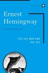
The Old Man and the Sea (3 Votes)
Ernest Hemingway, 1952, 132 pages, 3.71 by 466015 users
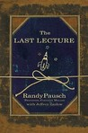
The Last Lecture (3 Votes)
Randy Pausch, Jeffrey Zaslow, 2008, 206 pages, 4.24 by 226028 users
Jane Eyre (3 Votes)
Charlotte Brontë, 1847, 507 pages, 4.09 by 1140491 users
To Kill a Mockingbird (3 Votes)
Harper Lee, 1960, 324 pages, 4.25 by 2966857 users
And Then There Were None (3 Votes)
Agatha Christie, 1939, 264 pages, 4.22 by 367488 users
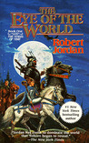
Wheel of Time (3 Votes)
Robert Jordan, 1990, 814 pages, 4.17 by 237300 users
Not a penny more, not a penny less (3 Votes)
Jeffrey Archer, 1976, 305 pages, 3.99 by 27133 users
Don Quixote (3 Votes)
Miguel de Cervantes, 2004, None pages, 4.71 by 5 users
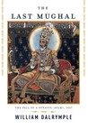
The Last mughal (3 Votes)
Dalrymple, 2006, 560 pages, 4.09 by 3814 users
The selfish gene (3 Votes)
Richard dawkins, 2016, 560 pages, 5.00 by 2 users
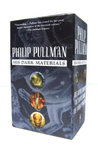
His Dark Materials (3 Votes)
Phillip Pullman, 2000, 1088 pages, 4.24 by 84890 users
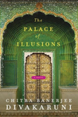
Palace of illusions (3 Votes)
Chitra Banerjee Divakaruni, 2008, 360 pages, 4.09 by 13911 users
God of small things (3 Votes)
Arundhati Roy, 1997, 340 pages, 3.90 by 154223 users
Behind the beautiful forevers (3 Votes)
Katherine Boo, 2012, 256 pages, 3.97 by 62787 users
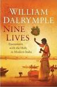
Nine Lives (3 Votes)
William Dalrymple, 2009, 284 pages, 4.00 by 3689 users
23 Things They Don't Tell You About Capitalism (3 Votes)
Ha-Joon Chang, 2010, 286 pages, 3.97 by 3523 users
Bad Samaritans: The Myth of Free Trade and the Secret History of Capitalism (3 Votes)
Ha-Joon Chang, 2007, 288 pages, 4.13 by 2141 users
Capital in the Twenty-First Century (3 Votes)
Piketty, 2013, 685 pages, 4.00 by 11460 users
Civilization: The Six Killer Apps of Western Power (3 Votes)
Niall Ferguson, 2011, 402 pages, 3.77 by 3472 users
The Ascent of Money: A Financial History of the World (3 Votes)
Niall Ferguson, 2007, 442 pages, 3.87 by 13792 users

Manufacturing Consent: The Political Economy of the Mass Media (3 Votes)
Chomsky, 1988, 393 pages, 4.22 by 9634 users
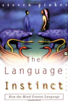
The Language Instinct: How the Mind Creates Language (3 Votes)
Pinker, 1994, 448 pages, 4.04 by 12133 users
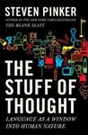
The Stuff of Thought: Language as a Window into Human Nature (3 Votes)
Pinker, 2007, 499 pages, 3.88 by 6032 users
Homage to Catalonia (3 Votes)
George Orwell, 1938, 232 pages, 4.14 by 20059 users
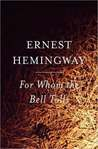
For Whom the Bell tolls (3 Votes)
Ernest Hemingway, 1940, 480 pages, 3.95 by 184560 users
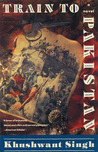
Train to Pakistan (3 Votes)
Khushwant Singh, 1956, 192 pages, 3.83 by 10897 users
The Company of Women (3 Votes)
Khushwant Singh, 1999, 232 pages, 3.18 by 2247 users
निर्मला (3 Votes)
प्रेमचंद, 1899, 218 pages, 3.97 by 1132 users
Kafka on the Shore (3 Votes)
Haruki Murakami, 2002, 467 pages, 4.12 by 151122 users
The complete Sherlock Holmes (3 Votes)
Sir Arthur Conan Doyle, 1927, 1796 pages, 4.50 by 103706 users
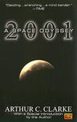
2001: A Space Odyssey (3 Votes)
Arthur C. Clarke, 1968, 297 pages, 4.10 by 158288 users
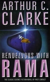
Rendezvous with Rama (3 Votes)
Arthur C. Clarke, 1973, 243 pages, 4.05 by 86898 users
Sandman (2 Votes)
Neil Gaiman, 1988, None pages, 4.33 by 104090 users
Lord of the Flies (2 Votes)
William Golding, 1954, 182 pages, 3.63 by 1495323 users